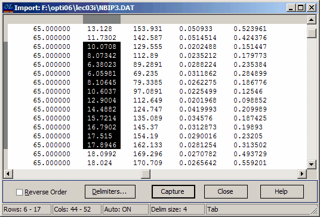

Text Data Import
This utility enables you to effortlessly import numeric data from any ASCII file (the source file) and insert it into the selected column of an OptiChar data file (the target file—distinct from the Target data file). You can find the Import utility in the Edit menu, or you can access it quickly using the F9 keystroke.
To use the utility, first open a data file from one of the databases accessible through the Data menu. Position the mouse cursor over the column in the data file that you wish to edit, then either select the Import command from the Edit menu or press the F9 key. This action will open the Import Data dialog box, where you can locate and open the text file that will serve as the source for the data import. Once the source file is opened, its contents will be displayed in the Import window:

Position the mouse pointer at the upper left corner of the rectangle containing the data you wish to import, and click the left mouse button. While holding the button down, drag the mouse to the lower right corner of the rectangle until all the desired data is selected, then release the mouse button. Alternatively, you can use the Shift key in conjunction with the mouse operations to maintain the first selected corner while moving the mouse. The following keyboard keys have their standard functions during this operation:
F7 (Mark)
Home
End
Page Up
Page Down
Arrow keys
Please note that the Paste Buffer can only store one data column at a time. If you select multiple columns from the source file, the Paste Buffer will capture all selected data by rows—this means it will first store all elements from the first row (from left to right), followed by all elements from the second row, and so on. Since the captured data is inserted into a single column of the target file, it is advisable to select only one column from the source file at a time.
If you need to import the selected data into the Paste Buffer in reverse order, you can check the “Reverse Order” box located at the bottom of the Import window. This will allow the rows of input files to be imported into the Paste Buffer in reverse arrangement.
When working with input ASCII files containing multiple columns of data, you can also specify the delimiters between values to properly align text columns before importing the data. To set the ASCII Data Import Options, simply click the “Delimiters…” button.
If you are not satisfied with your selection, simply repeat the procedure. Once your selection contains the data you need, press the “Capture” button. This will extract all the selected data and store it in the Paste Buffer. After the data is captured, the contents of the Paste Buffer will be displayed on screen.
The transfer of data from the Paste Buffer to the source file will always begin with the data value highlighted in the data column of the Paste Buffer. There are several options available for transferring data from the Paste Buffer to the source file.